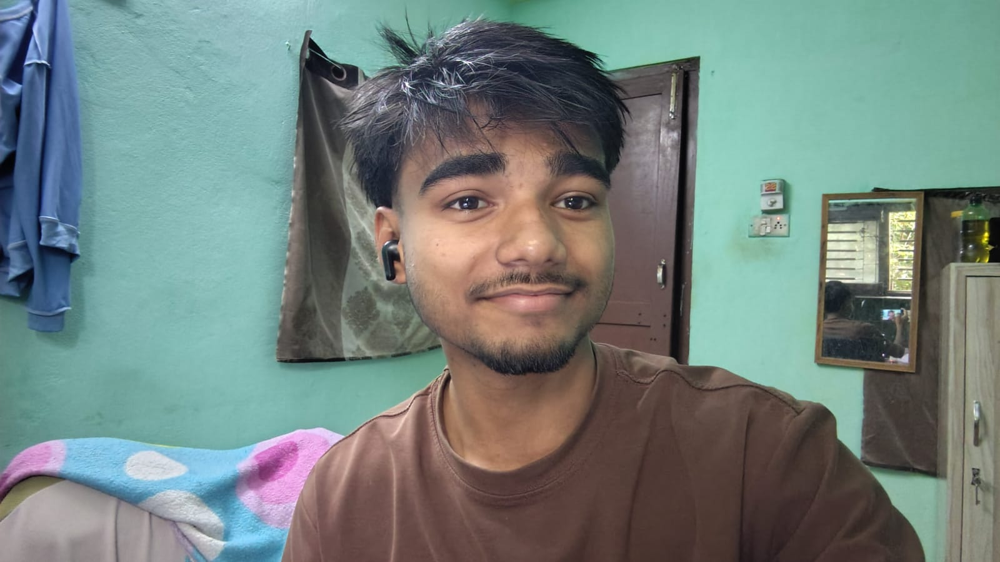
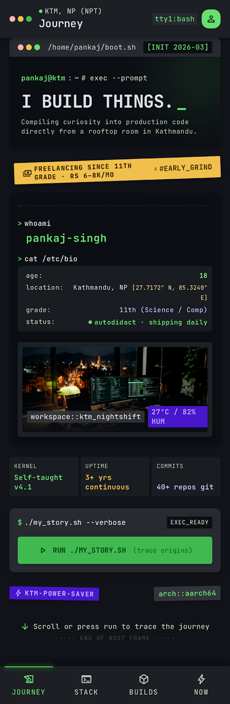
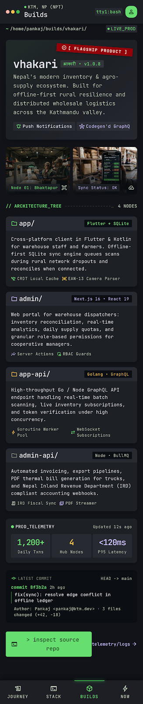
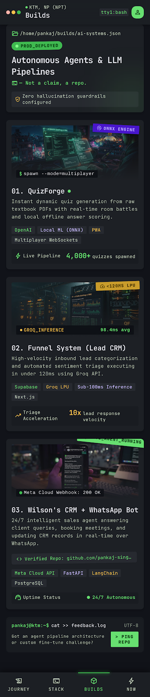
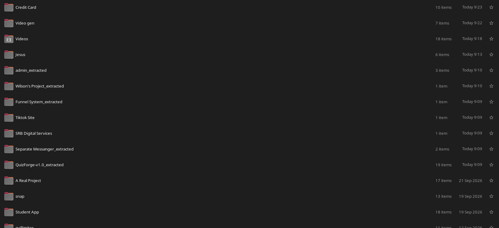
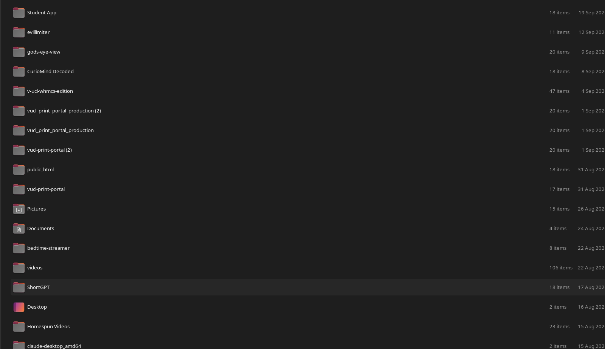
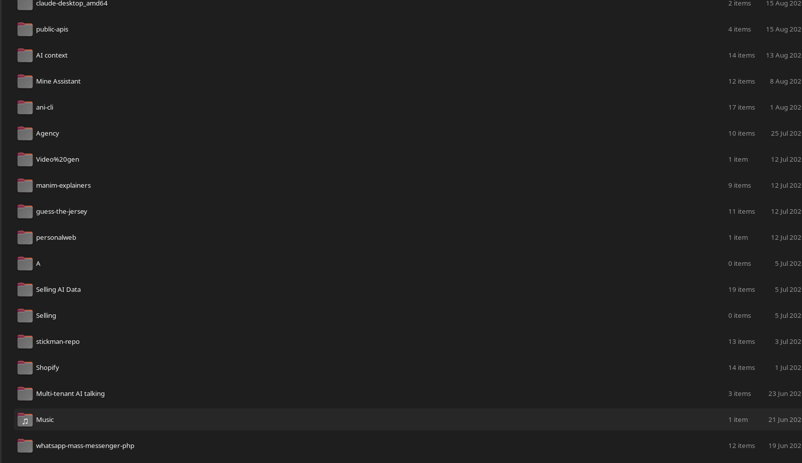
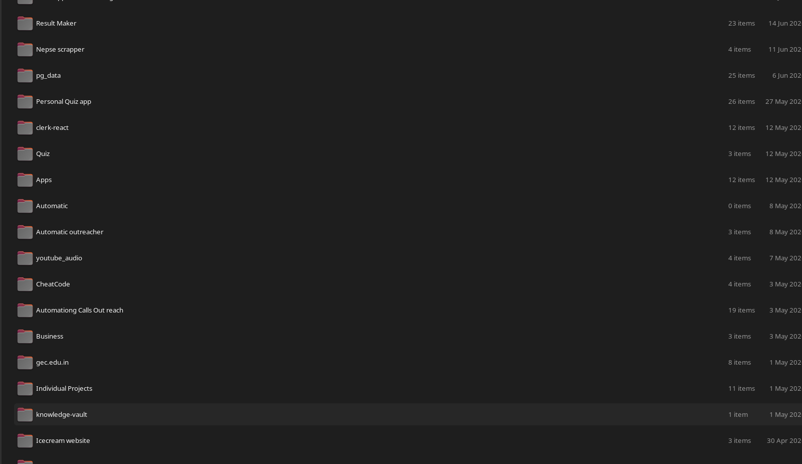
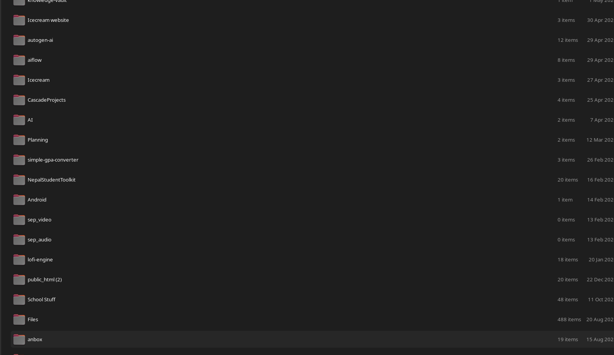

Compiling curiosity into production code directly from a rooftop room in Kathmandu.
location: Kathmandu, NP [27.7172°N 85.3240°E]
grade: 11th (Science)
college: Bridge Water Intl — scholarship
hostel: Baneshwor, KTM // home: Sarlahi
english: fluent // spoken + written
status: ● autodidact · shipping daily

Before the cloud_
No internet in my town. So I started where the screen was.
The stack wall_
Three mobile stacks, two API styles, one brain. Pick a sticker.
FRONTEND
Next 16 · React 19 · shadcn · framer-motion · AntD
BACKEND
GraphQL (Apollo) · Prisma · Express · FastAPI · PHP
MOBILE
Expo/React Native · Flutter · native Kotlin/Gradle
AI toolbelt_
✓ Claude — architecture, refactors, reviews
✓ Codex — second opinion on tricky code
✓ Cline / Continue — in-editor pair programming
✓ Copilot / Gemini CLI — autocomplete & quick scripts
◈ Google Stitch — 22 UI screens shipped from prompts
◈ OpenAI · Groq (LLaMA 3.3) · Gemini TTS · transformers.js — runtime APIs
22 screens from prompts_



The builds_
Real repos, real stacks, real users. Tap a link to open live.
▸ Vhakari — cross-platform app + admin
Monorepo: app/ (Expo ~38, Apollo, Redux Toolkit, Firebase) + admin/ (Next.js, AntD, Prisma, AWS) + app-api/ & admin-api/ (Apollo Server, codegen'd GraphQL, expo-server-sdk push). 4 packages, per-client codegen configs, migrations. v1.0.8 on device.
▸ QuizForge v1.0 — AI quiz platform
AI quiz platform with online/offline mode, multiplayer battles, PWA install, and local ML (@xenova/transformers — works without hitting an API). Supabase auth + realtime.
▸ Funnel System — AI lead-extraction CRM
Paste raw leads → LLM extracts, scores, and enriches them automatically. Built for web-dev client acquisition. Full Supabase schema, two-tier admin.
▸ Bots — WhatsApp & Instagram (same engine, two platforms)
Human-like messaging engine: warmup & campaign modes, anti-ban behavior, CSV pipelines, scheduled sends. The Instagram bot is the same architecture ported over — not just WhatsApp. Companion CRM with super-admin/admin tiers, JSONB settings, bcrypt auth. Plus a 55KB blueprint doc. This is the "auto-replying AI on Instagram and WhatsApp" — not a claim, a repo.
▸ Nepse Scraper — built for a client, paid Rs 5,000
Scrapes Nepal Stock Exchange data on schedule. Mine, built from scratch — and someone put real money on it. One of the first things that taught me: code has a price list.
▸ Cleritax / Student App — the most complex thing I've shipped
The hardest problem I've worked on. Complete schema (supabase_schema.sql), deployment guide, testing guide, tunnel runner, AI integration layer documented end-to-end — plus a full product report and comprehensive audit doc. Everything a SaaS needs, nothing hand-waved.
▸ Client contracts (PHP) — the ones that paid
Service portals with wallets, admin panels, OTP auth, e-commerce stores, print/WHMCS portals — real briefs, real deadlines, real payments. Not passion projects: contracts I fulfilled for clients.
▸ Prashnasewa — Loksewa prep (tried, failed, rebuilt)
My first serious product attempt: Loksewa question practice for Nepal's public-service exams. It didn't take off — so I rebuilt the AI layer and kept the lessons. Honest failure, documented.
▸ AstraCam
Native Kotlin camera app · release keystore signed · dev.astra.camera
▸ Mine Assistant
Flutter assistant app · deploy_to_device.sh · device testing guide
▸ StudentHub
Next.js + Express + Socket.io monorepo · habits, notes, groups · Mongo Atlas
▸ NepalStudentToolkit
Android · compliance checks · functional test results — documented like a pro
▸ Chaos shelf
WhatsApp mass messenger (Node + PHP ports) · Instagram bot · Mob Control APK mod (smali/decompiled) · reelkit (Playwright + Remotion vertical-video pipeline — client work) · Python call-outreach scheduler · faceless YouTube videos — tried, didn't fly · casual video editing
▸ Cloned to study
ShortGPT · OpenChatCut · opensource-clipping · lyrebird. Read the changelogs, learned the architectures, gave credit. That's how autodidacts reverse-engineer.
The disk doesn't lie_
40+ project folders, dated and rotting honestly since 2025. This isn't a curated portfolio folder — it's the whole grave and museum. Tap any shot to open full size.





▸ Wondering why I only sent you folder images?
Fair. Here's the git too — commits, dates, repos, the whole paper trail: github.com/hackedpankaj001-lab. The folders were me showing you the workshop; this is showing you the paperwork. Sending both, just to be professional about it.

Why should you hire me_
You asked for a vibe coder. Here's the case, in evidence — not adjectives.
▸ The attitude: "I can work on it."
You don't need someone who asks what's in the job description. You need someone you can dump any work on — a client's PHP portal at midnight, a Flutter app for a college, an AI bot, a spreadsheet mess, a video edit, a research dig, a design you can't describe yet — and get back "done, here's the link."
That's not a promise, it's my track record: no teacher, no team, no roadmap — just folders piling up since I was 14 because someone gave me a problem and I refused to return it unfinished. Give me anything. Watch me figure it out. Your first reply from me will always be: I can work on it.
▸ The homework is already submitted
Before our call, I ran OSINT on your entire footprint — momocha, Danson, ChimpVine, Davson360, both bankruptcies, the 2004 family site, your own words from 25 years of web archives. The EXHIBIT A popup on this page is the receipt. If I do this much for a job I don't even have yet — imagine what lands in your repo on day one.
▸ Polymath on payroll — three hires, one person
Web (Next/React) + Mobile (React Native, Flutter, native Kotlin) + AI/automation (LLM APIs, bots, scrapers) — and PHP when it pays. Your form says "junior but can vibe code websites, mobile apps, videos, images": four checkboxes, one human, all already ticked.
▸ I speak your tools natively
Google Stitch, opencode, Claude, Codex, Gemini — daily drivers, not buzzwords. 22 UI screens shipped from prompts. You don't train me on vibe coding; you point me at the problem.
▸ I've shipped with money on the line
Rs 5,000 for a Nepse scraper someone actually bought. Rs 6–8k/month freelancing — while in 11th grade. Client PHP contracts fulfilled, deadlines met. This isn't a portfolio built for grades; it's built for invoices.
▸ Autodidact — by necessity, not by slogan
No internet in my town. I coded on a television. Crypto at 14. OSINT from scratch. Every skill on this page was acquired by wanting it badly enough and finding a way. You can't teach initiative — you can only hire it.
▸ The failures are on the page too
Prashnasewa failed. Faceless YouTube failed. Cybersecurity didn't stick. I publish the misses next to the hits — because you're not hiring a highlight reel, you're hiring judgment. Failures are where the judgment came from.
[x] Polymath — web · 3 mobile stacks · bots · video · OSINT
[x] Autodidact — TV + no internet → this page
[x] Neophile — Stitch, Groq, local ML, APK teardowns
[x] Great spoken English — 19-min call, done and documented
[x] Lives in Kathmandu — Baneshwor hostel, college by day
[x] Vibe codes websites / apps / videos / images
[x] Polymath you can dump any work on — "I can work on it"
[!] Video games — not my lane; point me at it and it ships.
Now →_
! ONE BOX UNCHECKED: video games
Honest file: games aren't my thing — but if the role needs one, I'll ship one fast. Give me a problem and it gets solved; that's the whole autodidact contract. Everything else on the form, I've already lived.
✓ LEARNING LOOP — 11th grade by day, freelancing and building after college
Science stream · Kathmandu · dam-fluent English · self-taught everything. The form asked for a polymath autodidact who lives here. That's the whole file.
▸ pankaj-singh
18 · Kathmandu (hostel, Baneshwor) · home: Sarlahi · scholarship @ Bridge Water Intl, Sinamangal. Fluent English, dam-fast shipping. Face you can verify against this file.
autodidact // kathmandu // 40+ repos // shipping since the TV days